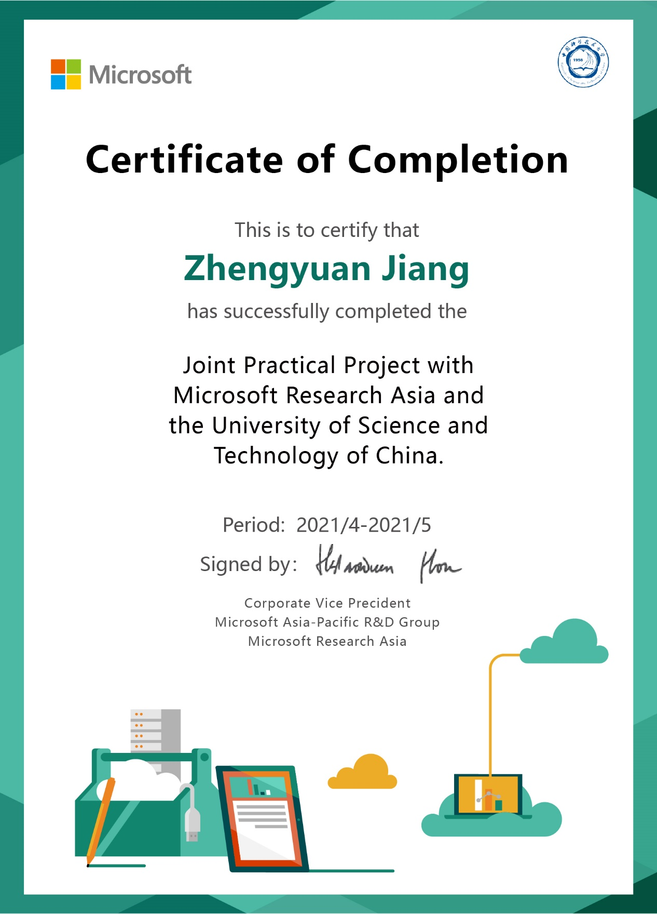
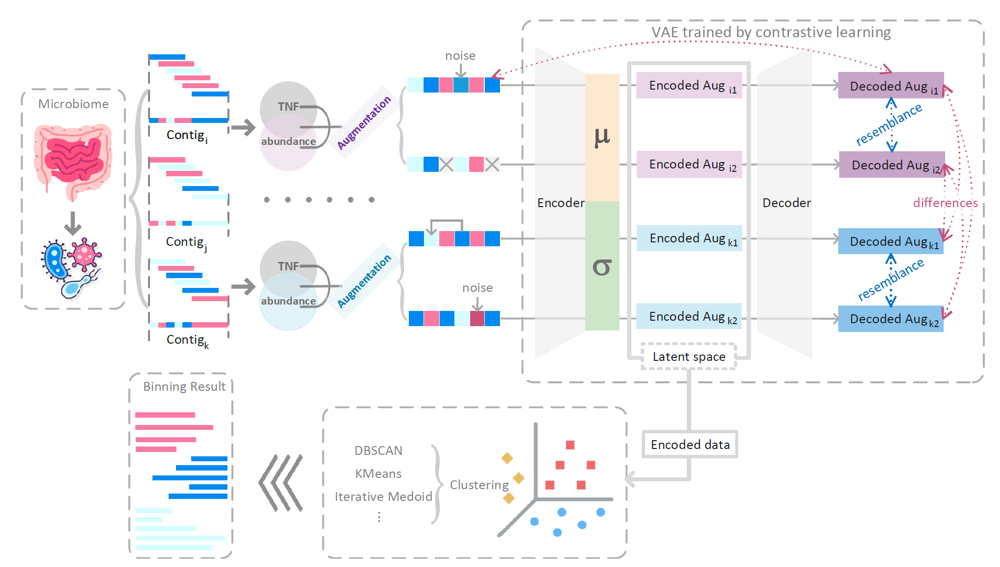
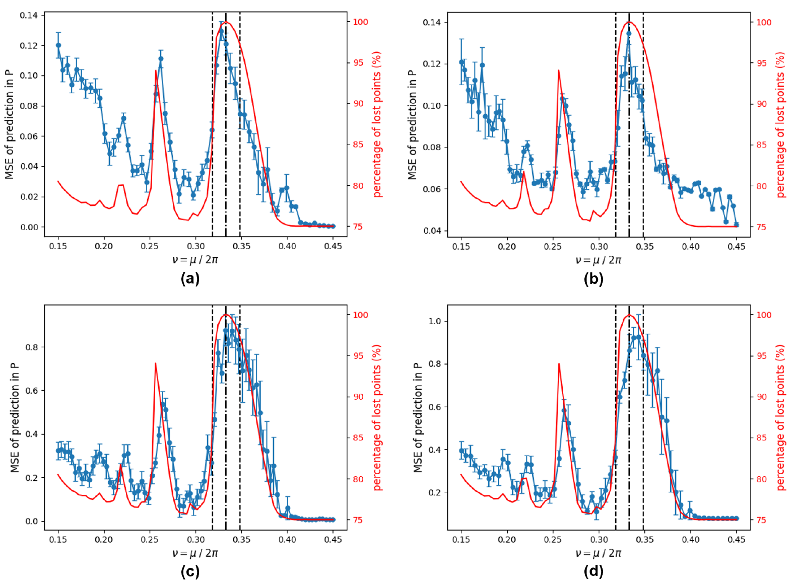
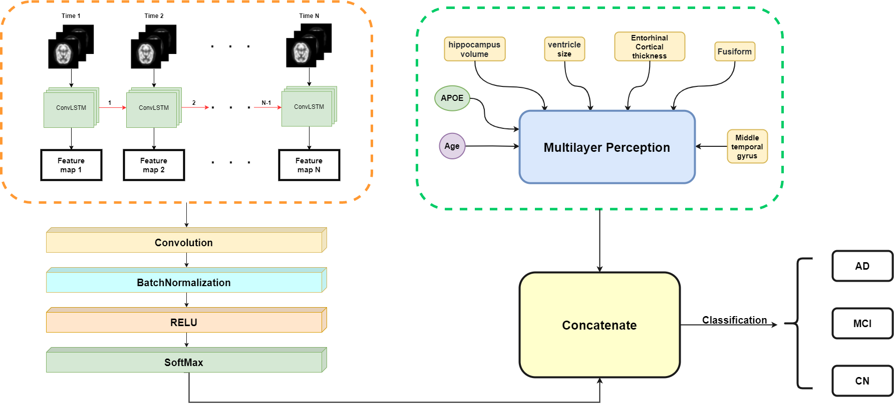

Publications
The 26th Annual International Conference on Research in Computational Molecular Biology (RECOMB-22).
Projects
- CLMB: A deep learning Metagenomic binning tool CLMB outperforms the previous state-of-the-art binning methods significantly, recovering the most near-complete genomes on almost all the benchmarking datasets (up to 17% more reconstructed genomes compared to the second-best method). It also improves the performance of bin refinement, reconstructing 8-22 more high-quality genomes and 15-32 more middle-quality genomes than the second-best result. Impressively, in addition to being compatible with the binning refiner, single CLMB even recovers on average 15 more HQ genomes than the refiner of VAMB and Maxbin on the benchmarking datasets. On a real mother-infant microbiome dataset with 110 samples, CLMB is scalable and practical to recover 365 high-quality and middle-quality genomes (including 21 new ones), providing insights into the microbiome transmission. CLMB is open-source and available at here.
- Data-driven chaos indicator for nonlinear dynamics I test the performance of a data-driven chaos indicator on different machine learning algorithms, whose prediction accuracy can act as a chaos indicator for nonlinear beam dynamics optimization, and thus provide a possible way to distinguish stable and unstable particles using short-term tracking.
- Predicting Alzheimer's disease in prodromal-stage by multimodal convolutional recurrent neural We proposed an interpretative multi-modalities model for AD classifying problem. This model is constituted by a convolutional recurrent neural network that resolves time-sequential PET images for extracting spatiotemporal correlation, and a multilayer perceptron disposes of other correlation information of subjects such as the apolipoprotein E allele. Results indicate that our model can classify AD patients, MCI subjects with CN group for over 86% accuracy on 1671 subjects with 7280 test images.
-
A Survey of Traffic shaping Applications in Privacy protection
In Prof.Xue's course Network Security Protocol, I did literature review with my friend Lili Tang.
We implement a simple Python demo for both Leaky Bucket Algorithm and Token Bucket Algorithm. Moreover, we demonstrate the vulnerability of privacy through traffic analysis in IoT net, and enumerate some specific attacks to that, such as, Hidden Markov Model and Machine Learning clustering Algorithm. We summarize the traditional methods against traffic analysis attacks and further point out the pros and cons of them. Finally, we evaluate its feasibility in real network scenario and propose our methods to optimize its implementation and deployment.
See our demo [here]
- Digital Human figure portal
Under the guidance of Prof.Lu, I worked independently to solve Image matting problem. I cloned code of DeepLabv3, PlaneNet and ScanNet from Github. Then I modified the code and apply it to this project.
Finally, I received the Certificate of Completion from Microsoft Research Asia.
 - Amplifier nonlinear distortion research device
I worked together with my friends Henan Wang and Wen Sun in my second year in USTC. Our cooperation was very pleasant, and each of us learned much from other. After two months' training, during which we spent all our leisure time in Lab, we had successfully designed smart glasses and Automatic balancing board. Then we used software to simulate the nonlinear distortion.
Next, we combined basic electronic components to make the real simulator, and tested it on an oscilloscope. The result was extremely good and interesting.


I use algorithms as follow: (a) 7th polynomial regression. (b) SVR. (c) Random forest. (d) GBDT. Each of these four models indicates the nonlinearity of the system well. Each peak on the blue line corresponds to a higher order resonance line. 
We use data from here.

Finally, our group got third prize in National Undergraduate Electronics Design Contest in China, Anhui province. I was proud of our fruit and my two excellent teammates.